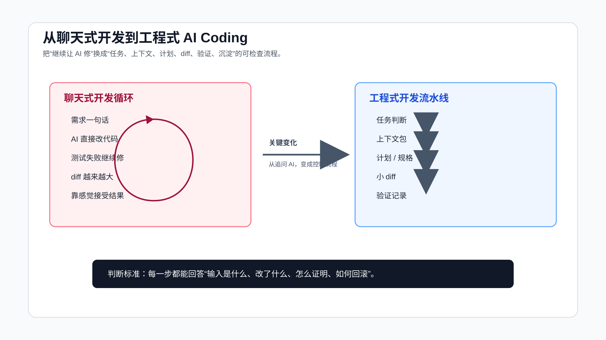

从聊天式开发到工程式开发
很多 AI Coding 失败，不是因为 AI 不会写代码，而是因为我们把真实项目当成聊天窗口来处理。
聊天窗口里，事情看起来很简单：描述需求，让 AI 改，测试失败再让它修。几轮下来，代码也许能跑，但 diff 变大了，修改范围说不清了，测试失败到底是不是本次引入也说不清了。
聊天式开发的典型问题就在这里：它把开发过程压成一段对话，却丢掉了真实工程里的控制点。
工程式 AI Coding 要做的事正好相反：不追求一次聊完，而是把任务拆成可检查的阶段。

聊天式开发为什么容易失控
先看一个常见流程：
我：帮我修一下用户无法提交订单的问题。
AI：我已经修复了。
我：测试失败了。
AI：我会继续修复。
我：页面还是不对。
AI：我会调整前端逻辑。
这段对话的问题不是“AI 态度不好”。它的问题是从一开始就没有工程边界。
它没有问清楚订单提交失败的复现路径，没有确认前后端入口，没有区分接口失败、状态错误、权限拦截还是前端表单校验，也没有定义修完之后怎么证明完成。
于是 AI 会沿着它最容易看到的代码路径修改。它读到一个 submit 方法，就改 submit；读到一个错误提示，就改错误提示；读到一个测试失败，就让测试通过。每一步都像在解决问题，但整体可能越来越偏。
真实项目里，这种失控常见在五个地方：
- 上下文失控：AI 读了相似文件，却没读到真实入口。
- 范围失控：局部 bug 被改成跨模块重构。
- 验证失控：测试失败后没有改前基线，无法判断责任。
- 语义失控：AI 把业务规则理解成普通 if/else。
- 复用失控：这次踩过的坑，下次还要重新解释。
聊天式开发不是不能用。它适合低风险小事。问题是，很多人拿它处理真实需求。
工程式开发的核心变化
工程式 AI Coding 不是把流程变复杂，而是把隐含判断显式化。
程序员平时做需求，本来就会问这些问题：
- 这个需求影响哪些模块？
- 哪些行为不能改？
- 有没有历史兼容逻辑？
- 先改哪一小步最安全？
- 改完跑什么测试？
- 如果失败，怎么回滚？
只是以前这些判断在你脑子里。AI 加入以后，这些判断必须写出来。
一个工程式流程可以很轻：
1. 任务判断：这个任务风险多高？
2. 上下文包：AI 应该先读哪些文件？
3. 计划：它准备改哪些文件，为什么？
4. 小 diff：一次只完成一个明确步骤。
5. 验证：跑命令、看输出、记录证据。
6. 沉淀：把反复出现的规则写回项目。
这六步不一定每次都写成长文。低风险任务可以很短，高风险任务要更完整。关键是顺序不能反。
第一步：先定义任务类型
不要一上来就让 AI 写代码。
先让它判断任务类型：
先不要改代码。
请判断这个任务属于哪一类：
- 局部实现
- 陌生模块理解
- bug 排查
- 跨模块需求
- 重构
- 高风险业务改动
然后说明：
1. AI 可以负责哪些部分。
2. 哪些部分必须由人确认。
3. 实现前还缺哪些上下文。
这一步能过滤掉很多不该直接授权的任务。
比如“按钮样式不对”可能是低风险局部改动。“支付成功后订单状态偶尔回退”就不是。后者涉及状态流转、异步回调、幂等、历史数据和测试复现，必须先做上下文和验证设计。
工程式开发的第一条规则是：任务风险决定流程重量。
切换到工程式流程的几个硬信号
很多人不是不知道工程式流程有用，而是不知道什么时候该切。
可以记几个硬信号。只要出现其中两个，就不要继续聊天式开发。
第一个信号：AI 需要自己找入口。
如果你不能告诉它入口文件、测试文件、配置文件，只能说“你读一下项目”，那就说明任务还在侦察阶段。侦察阶段应该让 Agent 列事实和路径，不应该授权实现。
第二个信号：任务里有不能改变的行为。
比如旧接口响应、历史数据兼容、权限拦截、状态流转、字段语义。这些东西需要写进约束。只写“修一下”不够。
第三个信号：验证不是一条命令能覆盖。
前后端联动、异步任务、数据库状态、副作用、浏览器交互，都说明验证要分层。此时“跑了测试”只能覆盖一部分风险。
第四个信号：当前 diff 已经解释不清。
如果 AI 改了 8 个文件，但你只能说出其中 3 个为什么要改，就先停。让它分类 diff，再决定保留、拆分还是回滚。
第五个信号：测试失败开始被归因。
AI 说“这个失败和本次改动无关”时，不要直接接受。先让它给改前基线、失败命令、失败日志和影响面。没有这些证据，就不能继续在失败基础上叠补丁。
这些信号的共同点是：任务已经离开简单代码生成，进入工程责任区。
还有一个判断很实用：如果这次改动未来要被别人 review、要进 CI、要回滚、要写发布说明，就不要只按聊天式开发处理。真实交付天然需要证据链。
已经失控时怎么恢复
很多时候，你不是一开始就走工程式流程，而是聊了几轮之后才发现不对。
这时不要急着重开一个更长的 prompt。先把当前状态收住。
第一步，冻结修改。
不要继续编辑文件。
请只分析当前状态。
第二步，整理 diff。
列出当前已修改文件。
把每个文件分成三类：
- 直接服务原任务。
- 顺手重构或无关修改。
- 可能改变外部行为但未被授权。
第三步，回到事实。
列出已确认事实、未验证假设、已排除假设。
标出当前失败命令和输出。
第四步，重新定义下一步。
如果只保留最小修复，下一步应该改哪个文件？
需要先补哪条测试或复现证据？
哪些改动建议拆到独立任务？
这个恢复流程的目的不是让 AI 自己回滚。真实工作区可能有你的改动，也可能有已经确认过的改动。Agent 先分类，人再决定怎么处理。
一旦恢复流程跑完，就不要继续用原来的大对话推进。把清理结果整理成任务卡，再让 Agent 执行一个最小步骤。
第二步：让上下文可复查
聊天式开发里，最常见的一句话是：
你先读一下这个项目。
这句话没什么约束力。
AI 读哪些文件、有没有漏关键路径、是否把同名但无关的文件当成入口，你都不知道。先让它列出实际读取路径，并解释为什么读。
可以这样问：
请先建立任务上下文，不要改代码：
1. 列出你实际读取过的文件路径。
2. 标出入口文件、核心实现、测试文件、配置文件。
3. 说明哪些文件看起来相关但暂时不该改。
4. 如果缺少关键上下文，先提问。
代码地图可以单独沉淀。这里先记住一个原则：上下文必须可复查。
你不能只听 AI 说“我已经理解项目”。你要看它到底读了什么。
配套代码仓库 DavidDingXu/learn-ai-coding 的工具 module 里有代码地图命令，可以帮你先做一层仓库扫描：
cd learn-ai-coding/ai-coding-workflow-kit
node src/cli.js codemap --root .
它不会替代人工判断，但能快速列出文档、配置和测试入口，避免 AI 一开始就漏掉基础文件。
第三步：把实现变成计划
聊天式开发里，AI 很容易直接进入实现。工程式开发里，实现之前要有计划。
计划不需要复杂。一个小需求可以只有这几行：
## Plan
1. 修改 `src/order.ts` 的状态回退判断。
- 原因：当前入口在这里。
- 验证：新增失败测试。
2. 补充 `test/order.test.ts` 的已支付订单回退用例。
- 原因：锁定业务边界。
- 验证：`npm test`。
计划的作用不是让 AI 写方案文档，而是让你在代码生成前有机会发现问题。
如果计划里出现这些信号，就要暂停：
- 它准备改无关文件。
- 它没有提测试。
- 它想新增依赖。
- 它把重构混进 bug 修复。
- 它说“顺便优化”。
- 它跳过了你明确要求保留的旧行为。
计划阶段发现问题，成本很低。代码写完再发现，成本就高多了。
第四步：限制 diff
AI 一次改太多，是工程式开发最大的敌人之一。
可以给它一个固定约束：
只执行计划的第 1 步。
要求：
- 不改计划外文件。
- 不做重构。
- 不新增依赖。
- 如果必须扩大范围，先停止并说明原因。
这条规则看起来简单，但非常有效。
它会逼 AI 把复杂任务拆小，也会降低审查成本。一个 50 行 diff 和一个 700 行 diff，审查难度不是线性差别。后者经常会让人放弃认真看。
工程式开发里，diff 必须服务任务，不服务 AI 的发挥。
第五步：验证不是一句话
“已修复”不是验证。
验证至少要包含三类信息：
## 改前
- 问题如何复现？
## 改后
- 跑了什么命令？
- 输出是什么？
## 剩余风险
- 哪些路径没覆盖？
如果是前端改动，还要看页面。 如果是接口改动，还要看请求和响应。 如果是状态流转，还要看正向路径和禁止路径。 如果是权限逻辑，还要看允许和拒绝两类用例。
验证证据还要和风险匹配。改一行文案，截图或页面预览可能够了；改状态机，只看单元测试就不够，还要补禁止流转、重复回调和历史数据场景。AI 最容易漏掉的不是 happy path，而是那些过去靠程序员经验兜住的边界。
不要让 AI 用一句“测试通过”带过。让它贴命令、输出和影响范围。
配套工程的工具 module 里的验证记录检查器可以作为最小约束：
cd learn-ai-coding/ai-coding-workflow-kit
node src/cli.js verify-ledger --file examples/verification-ledger.pass.md
如果记录缺少关键段落、命令块或通过信号，它会直接指出缺口。
第六步：把经验写回规则
工程式开发最后一步是沉淀。
如果这次任务里你反复提醒 AI：
- 不要改 generated 文件。
- 不要新增依赖。
- 测试失败先跑 baseline。
- 前端改动必须截图。
- 只改计划内文件。
那这些内容就应该进入规则文件、检查清单或 Skill。
聊天式开发的问题是，每次都重新聊一遍。工程式开发的价值是，下一次不用从零开始。
规则沉淀可以很轻：
## AI Coding Rules
- Keep diffs scoped to the requested task.
- Do not edit generated files.
- Run baseline before blaming existing failures.
- Ask before adding dependencies.
- For UI changes, verify in browser and keep screenshot evidence.
不用一次写很多。只写高频、稳定、会影响结果质量的规则。
失败路径：越修越乱是怎么发生的
很多人以为 AI Coding 失控是突然发生的。实际不是。它通常是一点点滑下去的。
第一步，需求没有边界。
你只说“修复订单状态回退”，没有说哪些状态允许回退、哪些状态禁止回退。AI 会从代码里猜业务规则。它看到 status !== CANCELLED，可能就会推断“非取消都可以改”。这类推断看起来合理，但业务上可能完全错。
第二步，上下文没有入口。
AI 读到了 OrderService，但真实入口在异步回调。它改了同步下单路径，测试也能补上，但线上问题依旧存在。这个时候如果继续说“还不对，再修”，AI 往往会沿着已经读过的错误路径继续挖。
第三步，测试被当成目标，而不是证据。
测试失败后，AI 可能会调整测试断言，让它匹配当前实现。它不是故意偷懒，而是它的优化目标经常会变成“让测试通过”。如果没有明确告诉它业务边界，测试本身也会被它改成错误现实的证明。
第四步，diff 扩散。
为了让新逻辑跑通，它开始改工具函数、类型定义、前端状态、测试 helper。每个修改都有解释，但合在一起已经超出原任务。人再去审这个 diff，会很难判断哪一行是真正必要的。
第五步，验证缺失。
AI 最后告诉你“问题已修复”。但没有改前复现，没有命令输出，没有页面截图，没有接口响应，没有残留风险说明。你只能靠感觉接受。
聊天式开发最危险的地方，不是每一步都错，而是每一步都缺少边界。
什么时候可以保持轻量
工程式开发不是要把所有小事都变复杂。
下面这些任务可以轻量处理：
- 改一段不会影响逻辑的文案。
- 补一个局部函数的边界判断。
- 解释一段日志或异常栈。
- 生成一个临时脚本。
- 给已有测试补一个简单 case。
轻量处理也不是完全无规则。至少要保留三个动作：
1. 指定相关文件。
2. 限制改动范围。
3. 跑一个能证明结果的命令。
比如：
只修改 `src/format-price.ts`。
补充人民币分转元的格式化边界。
不要改其它文件。
完成后运行 `npm test -- format-price`。
这已经足够，不需要写完整 spec。
真正需要工程式流程的是这些任务：
- 改状态流转。
- 改权限判断。
- 改金额、库存、优惠、账务逻辑。
- 改跨前后端接口。
- 改历史兼容逻辑。
- 做重构。
- 修复无法稳定复现的问题。
- 处理测试大量失败。
任务越接近业务不变量，越不能只靠聊天。
一套可以直接复用的转换清单
当你发现自己已经进入“继续让 AI 修”的循环，可以立刻停下来，用下面这套清单重启任务。
# AI Coding Reset Checklist
## 1. 当前问题
- 现在失败的现象是什么？
- 是否有稳定复现路径？
## 2. 当前 diff
- AI 已经改了哪些文件？
- 哪些文件不在原计划内？
- 是否需要先回滚部分改动？
## 3. 真实入口
- 用户动作或系统事件从哪里进入？
- 后端入口、前端入口、异步任务入口分别是什么？
## 4. 业务边界
- 哪些行为必须保持不变？
- 哪些旧数据或旧接口需要兼容？
## 5. 下一步
- 只保留哪一个最小改动？
- 用哪个命令证明它有效？
这张清单可以把已经发散的对话重新拉回工程事实。
如果当前 diff 已经很乱，最好的动作通常不是继续修，而是让 AI 帮你分类：
请不要继续修改。
请分析当前 diff：
1. 哪些改动直接服务原任务？
2. 哪些改动是顺手重构？
3. 哪些改动可能改变外部行为？
4. 哪些改动建议回滚？
5. 如果只保留最小修复，需要留下哪些文件？
让 AI 审自己的 diff，比让它在混乱 diff 上继续写代码更有价值。
怎么把工程式流程放进工具
工程式 AI Coding 不是只能靠人工记忆。你可以把关键动作放进工具和规则里。
第一层，写进项目规则。
比如：
## AI Coding Rules
- Start with a short plan for any change touching more than one file.
- Keep the first diff focused on one behavior change.
- Do not change tests just to match the current implementation.
- Report baseline, command, output, and residual risk before saying done.
第二层，写成任务模板。
比如任务上下文包、debug worksheet、verification ledger。这些模板不需要绑定某个工具，Codex、Claude Code、Cursor 都能用。
第三层，写成 Skill 或脚本。
当流程开始重复出现，比如每次调试都要 baseline、假设、验证、ledger，就可以写成 Skill。确定性的检查动作，比如验证记录是否缺段落、代码地图是否能生成，可以写成脚本。
ai-coding-workflow-kit 就放在第三层。它不是业务系统，也不模拟一个假业务，而是服务 AI Coding 本身的真实工作流：代码地图、任务上下文、只读上下文包和验证记录。
这三层的边界要守住。
规则文件写长期约束，不能写一次需求。任务模板写本次目标，不能写项目百科。Skill 或脚本写可复用流程，不能包办业务判断。
比如“不要修改 generated 文件”可以放规则文件。
“这次只修 session 过期后首次提交失败”应该放任务上下文。
“调试时先记录 baseline、再列假设、再验证”可以放 Skill。
“用户登录失败时应该重试几次”不是工具规则，而是产品和系统设计决策，需要人确认。
把这些边界分清，工程式流程才不会变成文档堆叠。
读者迁移时要注意什么
把这套流程迁移到你的项目，不要照抄文件名。
前端项目重点看组件入口、状态管理、路由、接口封装、浏览器验证。 后端项目重点看 service 入口、持久化层、异步任务、事务边界、测试环境。 老项目重点看历史兼容逻辑、隐式配置、脚本命令、无法轻易跑通的测试。 多仓项目重点看 API 合同、版本依赖、发布顺序和回滚路径。
迁移时先做一件小事：找一个真实低风险需求，按工程式流程跑一遍。
不要一开始就挑战最复杂需求。你需要先验证流程能不能在你的项目里跑通：AI 能不能读到正确入口，测试命令能不能执行，规则文件有没有效果，验证记录能不能留下来。
流程跑通以后，再逐步提高任务复杂度。
一个完整对照
同样是“修复订单状态回退问题”，两种做法差别很明显。
聊天式写法：
帮我修一下订单状态回退的问题，补一下测试。
工程式写法：
先不要改代码。
目标：修复已支付订单被回退到 pending 的问题。
请先做实现前检查：
1. 读取订单状态流转入口、异步回调、相关测试。
2. 列出实际读取过的文件路径。
3. 判断哪些状态不能回退。
4. 给出最多 3 步计划。
5. 每一步说明验证命令。
限制：
- 不改公开 API。
- 不新增依赖。
- 不做顺手重构。
- 如果需要扩大范围，先停下来说明原因。
区别不在于第二段更长。区别在于第二段把控制点写清楚了。
AI 读什么、能改什么、不能改什么、怎么验证、什么时候停下来，这些都变成了明确约束。
常见问题
工程式开发会不会太慢？
对低风险小事，确实没必要重流程。改一个文案、补一个简单判断，可以轻量处理。
但对真实需求，工程式开发省的是返工时间。它让问题更早暴露在计划和上下文阶段，而不是等大 diff 出来以后再补救。
是不是所有需求都要写 spec？
不是。
规格驱动适合复杂需求、跨模块改动和高风险业务逻辑。普通小改动只需要任务上下文、计划和验证。流程重量要跟风险匹配。
AI 已经能自动读仓库，还需要上下文包吗？
需要。
自动读仓库不等于读对文件。上下文包的价值是告诉 AI 优先级和边界，也让你能复查它有没有漏关键路径。
如果 AI 不按计划改怎么办？
不要继续让它补救大 diff。先要求它解释每个文件为什么改，然后把计划外改动剥离出来。必要时直接回滚到上一步，重新按小任务执行。
工程式 AI Coding 最先该练什么？
先练三件事：实现前检查、小步计划、验证记录。
这三件事不依赖特定工具，也不需要引入框架。练熟以后，再上 SDD、OpenSpec、Skill、MCP、多 Agent，才不会变成概念堆叠。
切换的标志
判断是否该切到工程式流程，不看需求描述有多长，而看它是否进入真实代码库、真实业务边界和真实交付责任。
低风险任务可以继续聊天式处理。改一段文案、补一个明显判断、解释一段错误日志，没有必要把流程拉满。
一旦改动需要被审查、回滚、发布或复盘，就要切到工程式流程：任务判断、上下文、计划、小 diff、验证、沉淀。
这一步切过去，AI Coding 才会回到开发本身，而不是停在连续追问里。
可复查资料
- OpenAI Codex 最佳实践：https://developers.openai.com/codex/learn/best-practices
- OpenAI Codex
AGENTS.md指南：https://developers.openai.com/codex/guides/agents-md - Anthropic Claude Code 最佳实践：https://www.anthropic.com/engineering/claude-code-best-practices
- GitHub Copilot coding agent 任务说明：https://docs.github.com/en/copilot/tutorials/coding-agent/get-the-best-results